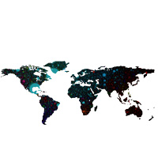

Cinema ticket and payment. 1st and

Smart TV App.

Responsive design.
RDC website redesign.
Some of my
recent projects →

Radario — event e-tickets
Pulseture — project management application
The Internet Map — live network infographics
Whiteyboard — sticky drawing boards
Sorted works fromRussian Design Cup 2012, which had led me to it's final →